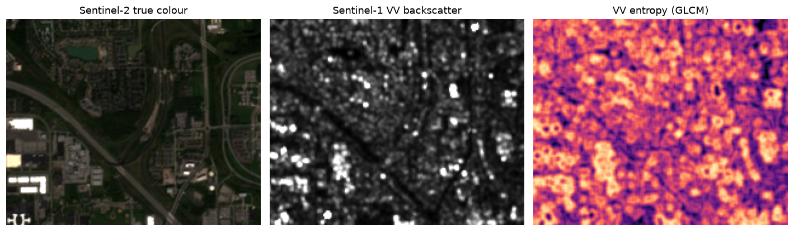
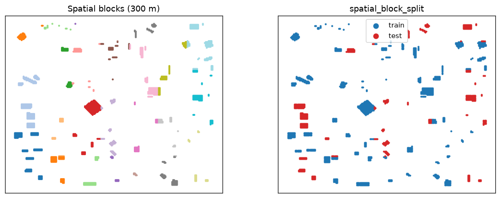
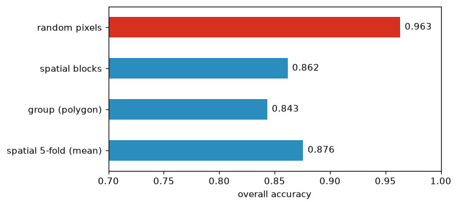
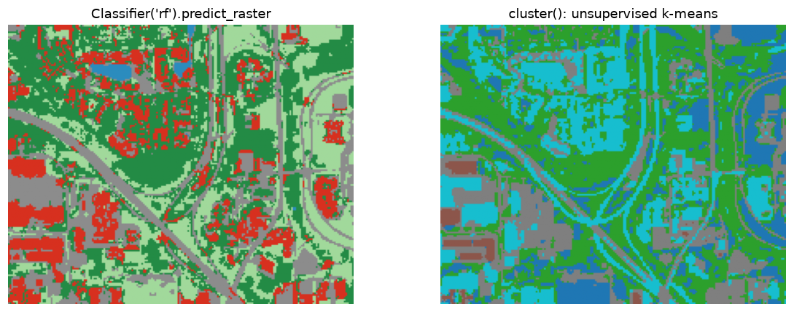
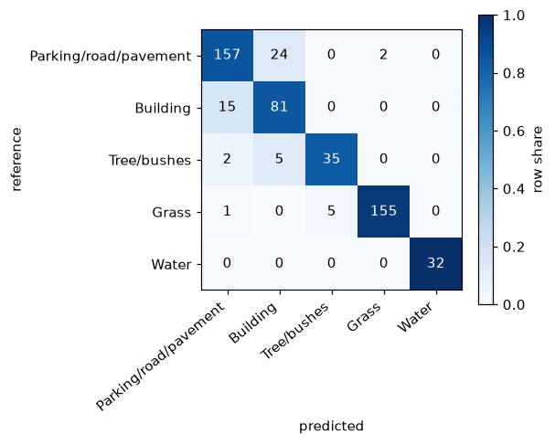
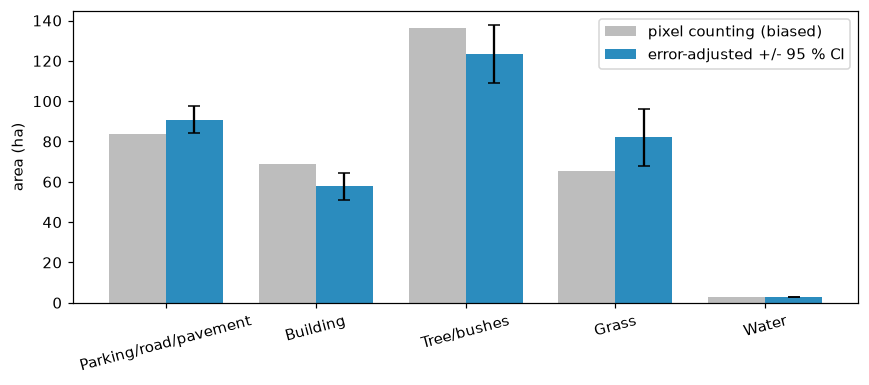
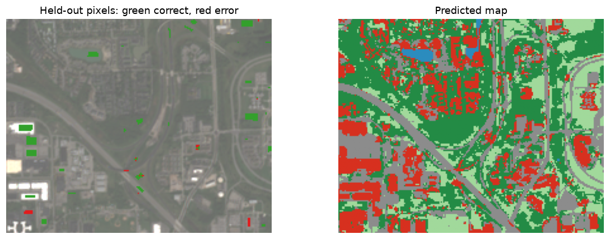

Sampling, Accuracy Assessment and Reproducible Runs
A land-cover map is only as trustworthy as its accuracy assessment.
Overview
This notebook shows how the way you split labelled pixels changes the accuracy you report, how to build feature stacks from Sentinel-2 and Sentinel-1, how to report accuracy with uncertainty, how to turn sample counts into area-adjusted estimates, and how to make every run reproducible.
Data (CPU only).Sentinel_2_UB (10 bands, ground-truth polygons) and Sentinel_01_UB (VV/VH backscatter and GLCM texture) for an urban scene in UTM zone 17N with 10 m pixels.
Core concepts
Learning objectives
Use the data model: load_stack, RasterMeta, as_band_dataset/as_band_array, labels_from_table, rasterize_labels, sample_pixels and a Normalizer fitted on training data only.
Compare random, spatial-block, group and spatial k-fold splits and quantify how much each inflates accuracy.
Build feature stacks (bands, indices, SAR, texture) and evaluate them with spatial_cross_validate.
Use the lightweight classify API (Classifier, extract_samples, cluster) and know when to prefer it.
Compute area-adjusted accuracy and area estimates with classify.olofsson.
Locate errors with error_map and test the model against baselines.
Record and replay a run with RunConfig, save_run/load_run and the command line.
Contents
Setup and data model
Labels, rasterization and sampling
Normalization without leakage
Split strategies compared
Feature stacks and spatial cross-validation
The lightweight classify API
Accuracy beyond overall accuracy
Area-adjusted accuracy (Olofsson)
Where the map is wrong, and baselines
Reproducibility and the command line
Setup and data model
load_stack reads a GeoTIFF, or a folder of single-band GeoTIFFs, into one xarray.DataArray with dims (band, y, x). Nodata becomes NaN and the CRS, transform and provenance travel with the array. Files that are not on the same grid are refused unless you resample them, so a silent misregistration cannot happen.
Installation. This notebook needs installation option 5 (core, spatial analysis, spatial statistics, geostatistics and remote sensing): pip install "geolattice[remote-sensing]". See “Installation options” in the GeoLattice README.
Code
# warnings, JSON, shell commands, Python path, temporary foldersimport warnings, json, subprocess, sys, tempfilefrom pathlib import Path # file pathswarnings.filterwarnings("ignore") # hide library warnings# arrays, tables, vector data and labelled rastersimport numpy as np, pandas as pd, geopandas as gpd, xarray as xrimport matplotlib.pyplot as plt # figuresfrom sklearn.ensemble import RandomForestClassifier # random forest classifierfrom geolattice.rsense import classify # GeoLattice classification helpers (Classifier, accuracy, Olofsson areas)import geolattice.rsense.classify.image_classification as ic # GeoLattice image-classification moduleDATA = Path("../../../../Data/08_remote_sensing/08_09_image_classification") # data folderS2_DIR = DATA /"Sentinel_2_UB"/"Images"# Sentinel-2 band files of the UB campusS1_BANDS = DATA /"Sentinel_01_UB"/"Bands"# Sentinel-1 VV and VH backscatterS1_TEX = DATA /"Sentinel_01_UB"/"Texture"# Sentinel-1 texture layersLABELS = DATA /"Sentinel_2_UB"/"Label_Point_Data"# labelled points and polygonsCRS ="EPSG:32617"# UTM zone 17N (the files carry no CRS)ic.set_seed(42) # reproducible random numbers in numpy and PyTorchplt.rcParams.update({"figure.dpi": 110, "axes.grid": False}) # figure resolution, no grid lines
Code
s2 = ic.load_stack(S2_DIR, crs=CRS) # the S2 files carry no CRS, so we supply itprint(s2.dims, s2.shape, list(s2.band.values)) # dimensions, shape and band namesprint("nodata -> NaN:", int(np.isnan(s2).sum()), "NaN pixels") # no-data pixels become NaNmeta = ic.RasterMeta.from_dataarray(s2) # grid metadata of the stackmeta.to_dict() # as a dictionary
RasterMeta is a small record of CRS, transform, shape and band names. It is what save_run stores so a map can be georeferenced again later.
Sentinel-1 lives on a larger grid (441 × 285 px) than the Sentinel-2 subset (210 × 170 px) although both have 10 m pixels and the same CRS. load_stack would raise on the mismatch; the safe route is to resample explicitly onto the S2 grid.
Code
s1_raw = ic.load_stack(S1_BANDS, pattern="V*.tif", crs=CRS) # the Sentinel-1 VV and VH filestex_raw = ic.load_stack(S1_TEX, crs=CRS) # the Sentinel-1 texture layers# the Sentinel-1 grid is larger than the Sentinel-2 gridprint("S1 grid :", s1_raw.shape, "| S2 grid:", s2.shape)try: ic.load_stack([S2_DIR /"B2.tif", S1_BANDS /"VV.tif"], crs=CRS) # stacking files on different grids ...exceptValueErroras e:print("refused :", e) # ... is refused with a clear errorref = s2.isel(band=0) # the Sentinel-2 grid as templates1 = s1_raw.rio.reproject_match(ref) # same CRS and 10 m: pure window cut, no resamplingtex = tex_raw.rio.reproject_match(ref) # textures cut to the same window# aligned shapes and the share of gapsprint("aligned :", s1.shape, tex.shape, "NaN share:", float(np.isnan(s1).mean()))
S1 grid : (2, 285, 441) | S2 grid: (10, 170, 210)
refused : VV.tif is not on the grid of B2.tif; resample it first or pass align=True (recorded in attrs).
aligned : (2, 170, 210) (12, 170, 210) NaN share: 0.0
as_band_dataset and as_band_array
A (band, y, x) array is convenient for models, but a Dataset with one variable per band is convenient for indices and for the classify API. The two converters are lossless inverses.
Code
ds = ic.as_band_dataset(s2) # one variable per bandprint(list(ds.data_vars)[:4], "...") # the first few variable namesback = ic.as_band_array(ds) # and back to a (band, y, x) array# values and CRS survive the round tripprint("round trip identical:", bool(np.allclose(back.values, s2.values, equal_nan=True)),"| CRS kept:", back.rio.crs)def nd(a, b): # normalised difference of two bands# (a - b) / (a + b), with a tiny term to avoid division by zeroreturn (ds[a] - ds[b]) / (ds[a] + ds[b] +1e-6)ds["NDVI"], ds["NDWI"] = nd("B8", "B4"), nd("B3", "B8") # vegetation and water indicesds["NDBI"], ds["MNDWI"] = nd("B11", "B8"), nd("B3", "B11") # built-up and modified water indicess2_idx = ic.as_band_array(ds) # the bands plus four indices as one stackprint(s2_idx.shape, list(s2_idx.band.values)[-4:]) # shape and the new band names
with \(\rho_{\text{NIR}}=\) B8, \(\rho_{\text{Red}}=\) B4, \(\rho_G=\) B3 and \(\rho_{\text{SWIR1}}=\) B11.
Code
rgb = s2.sel(band=["B4", "B3", "B2"]).values # red, green, blue# stretch to the 99th percentile and move bands lastrgb = np.clip(rgb / np.nanpercentile(rgb, 99), 0, 1).transpose(1, 2, 0)fig, ax = plt.subplots(1, 3, figsize=(13, 4)) # three panelsax[0].imshow(rgb); ax[0].set_title("Sentinel-2 true colour") # true colour# VV backscatterax[1].imshow(s1.sel(band="VV").values, cmap="gray", vmax=np.nanpercentile(s1.sel(band="VV"), 98))ax[1].set_title("Sentinel-1 VV backscatter") # title# VV GLCM entropyax[2].imshow(tex.sel(band="VV_ENT").values, cmap="magma"); ax[2].set_title("VV entropy (GLCM)")for a in ax: a.axis("off") # no axesplt.tight_layout(); plt.show() # arrange and draw

Labels, rasterization and sampling
The ground truth is a set of hand-drawn polygons. Each polygon is a group: all its pixels are spectrally and spatially alike, which matters for validation (section 4). Two small clean-ups are needed: a spelling variant in the class name, and an integer code per class.
labels_from_table builds point labels from a CSV with x/y columns. The same folder has one (point_data.csv, 23,945 points at 2.5 m spacing, i.e. several points per 10 m pixel). We load it only to show why polygons are the better sampling frame here.
Code
# labelled points as a GeoDataFramepts = ic.labels_from_table(LABELS /"point_data.csv", x="x", y="y", label="Class_ID", crs=CRS)# pixel column and row of every pointxy_pix = pd.DataFrame({"c": ((pts.geometry.x -677770) //10).astype(int),"r": ((4764070- pts.geometry.y) //10).astype(int)})# many points share one pixelprint(f"{len(pts):,} points fall in only {len(xy_pix.drop_duplicates()):,} distinct 10 m pixels")# typical number of points per pixelprint("points per pixel (median):", int(xy_pix.groupby(['c', 'r']).size().median()))
23,945 points fall in only 2,135 distinct 10 m pixels
points per pixel (median): 12
Several points per pixel are replicates, not independent samples. If they were split at random between train and test, the same pixel would sit on both sides. Polygons avoid this and give us a polygon ID for group splitting.
Code
poly = gpd.read_file(LABELS /"GroundTruth_data.shp").set_crs(CRS) # the labelled polygons# fix a typo in one class namepoly["Class"] = poly["Class"].replace({"Praking/road/pavement": "Parking/road/pavement"})NAMES = ["Parking/road/pavement", "Building", "Tree/bushes", "Grass", "Water"] # the five classes in orderpoly["cid"] = poly["Class"].map({n: i +1for i, n inenumerate(NAMES)}) # class name -> id 1-5poly["pid"] = np.arange(len(poly)) # a unique id for every polygonCLASS_NAMES = {i +1: n for i, n inenumerate(NAMES)} # id -> nameprint(poly.groupby("Class").size().reindex(NAMES).rename("polygons")) # polygons per class
Class
Parking/road/pavement 30
Building 42
Tree/bushes 17
Grass 18
Water 6
Name: polygons, dtype: int64
Code
template = s2.isel(band=0) # the 10 m gridlab, codes = ic.rasterize_labels(poly, template, "cid") # label raster, -1 = unlabeledpidr, _ = ic.rasterize_labels(poly, template, "pid") # polygon id on the same grid# class codes and labelled pixel countprint("codes:", codes, "| labelled pixels:", int((lab.values !=-1).sum()))cmap_cls = plt.matplotlib.colors.ListedColormap(["#8c8c8c", "#d7301f", "#238b45", "#a1d99b", "#2b8cbe"])fig, ax = plt.subplots(1, 2, figsize=(11, 4)) # two panelsax[0].imshow(rgb); ax[0].set_title("Image") # the imagem = np.ma.masked_equal(lab.values, -1) # hide unlabelled pixelsax[1].imshow(rgb, alpha=.5); im = ax[1].imshow(m, cmap=cmap_cls, vmin=1, vmax=5) # labels over the faded imageax[1].set_title("Rasterized labels") # title# class names on the colour barcb = plt.colorbar(im, ax=ax[1], ticks=range(1, 6), fraction=.04); cb.ax.set_yticklabels(NAMES)for a in ax: a.axis("off") # no axesplt.tight_layout(); plt.show() # arrange and draw
sample_pixels turns a label raster (or polygons or points) and an image into X (features), y (labels) and coords (map x, y of each pixel). The coordinates are what the spatial splitters need. Sampling the polygon-ID raster with the same image returns the polygon of every row, in the same order.
Code
def sample(img): # features, labels, coordinates and polygon id of every labelled pixel X, y, coords = ic.sample_pixels(img, lab) # feature table, class and coordinates _, groups, _ = ic.sample_pixels(img, pidr) # polygon id of the same pixelsreturn X, y.astype(int), coords, groups.astype(int) # as integer arraysX, y, coords, groups = sample(s2_idx) # sample the bands plus indicesprint("X:", X.shape, "| polygons:", len(np.unique(groups))) # sample size and number of polygonsprint(pd.Series(y).map(CLASS_NAMES).value_counts().rename("pixels")) # pixels per class
X: (1637, 14) | polygons: 93
Tree/bushes 576
Parking/road/pavement 368
Grass 342
Building 275
Water 76
Name: pixels, dtype: int64
Normalization without leakage
A scaler has parameters (mean, standard deviation, percentiles) that are estimated from data. If they are estimated on all pixels, the test set has influenced the model input. The rule is: fit on training data only, then apply the frozen scaler to everything else.
For the z-score, with training mean \(\mu_b\) and standard deviation \(\sigma_b\) of band \(b\),
\[ z_{ib}=\frac{x_{ib}-\mu_b}{\sigma_b}. \]
Min-max and percentile scalers follow the same rule with different parameters.
Code
# 300 m spatial blocks, 30 % of blocks for testing, class-balancedsplit = ic.spatial_block_split(coords, block_size=300, test_size=0.3, seed=0, stratify=y)norm = ic.Normalizer("zscore").fit(X.iloc[split.train]) # training pixels only# apply the training scaling to both setsXtr, Xte = norm.transform(X.iloc[split.train]), norm.transform(X.iloc[split.test])# training features are centred, test features are not exactlyprint("train mean ~0:", np.round(Xtr.mean().mean(), 3), "| test mean (not 0, as it should be):", np.round(Xte.mean().mean(), 3))state = norm.to_dict() # the scaler as a dictionaryprint("serialisable keys:", list(state)[:4]) # its keysic.Normalizer.from_dict(state).transform(X.iloc[split.test]).equals(Xte) # rebuilding it gives the same result
train mean ~0: -0.0 | test mean (not 0, as it should be): 0.219
serialisable keys: ['method', 'low', 'high', 'center']
True
Split strategies compared
Neighbouring pixels are more alike than distant ones (spatial autocorrelation). A random pixel split puts near-twins on both sides of the split, so the test score measures memorization of neighbours rather than generalization to new places. If \(\rho(h)\) is the correlation of labels and features at distance \(h\), the effective number of independent samples is much smaller than \(n\) whenever \(\rho(h)>0\) over the sample spacing.
Four strategies:
Strategy
Unit that is kept whole
Function
Random pixels
nothing
train_test_split
Spatial blocks
square blocks of side \(s\)
spatial_blocks, spatial_block_split
Group
polygon ID
group_split
Spatial k-fold
blocks, rotated over \(k\) folds
spatial_kfold
spatial_blocks shows the blocks; the block side is in map units (metres here).
Code
BS =300# block size in metresblk = ic.spatial_blocks(coords, block_size=BS) # block id of every pixel# number of blocks and pixels per blockprint("blocks:", len(np.unique(blk)), "| pixels per block (median):", int(pd.Series(blk).value_counts().median()))fig, ax = plt.subplots(1, 2, figsize=(11, 4)) # two panels# pixels coloured by blockax[0].scatter(coords[:, 0], coords[:, 1], c=blk, s=3, cmap="tab20"); ax[0].set_title(f"Spatial blocks ({BS} m)")tr, te = split.train, split.test # training and test pixels# coloured by splitax[1].scatter(*coords[tr].T, s=3, c="tab:blue", label="train"); ax[1].scatter(*coords[te].T, s=3, c="tab:red", label="test")ax[1].legend(markerscale=4); ax[1].set_title("spatial_block_split") # legend and titlefor a in ax: a.set_aspect("equal"); a.set_xticks([]); a.set_yticks([]) # equal scale, no ticksplt.tight_layout(); plt.show() # arrange and draw# no pixel in both setssplit.check();print("split kind:", split.kind, "| train/test:", len(split.train), len(split.test))
blocks: 40 | pixels per block (median): 31

split kind: spatial-block | train/test: 1123 514
Code
def rf(): return RandomForestClassifier(300, random_state=0, n_jobs=-1) # a fresh random forestdef score(tr, te, Xm=X): # test accuracy of a random forest for one split# fit on the training rows, predict the test rows m = rf().fit(Xm.iloc[tr], y[tr]); p = m.predict(Xm.iloc[te])returnfloat((p == y[te]).mean()) # share of correct predictionsrng = np.random.default_rng(0) # random generatorperm = rng.permutation(len(y)); k =int(0.7*len(y)) # random 70/30 pixel split# random pixels versus spatial blocksres = {"random pixels": score(perm[:k], perm[k:]), "spatial blocks": score(split.train, split.test)}gsplit = ic.group_split(groups, test_size=0.3, seed=0) # whole polygons in train or testres["group (polygon)"] = score(gsplit.train, gsplit.test) # its accuracy# 5-fold spatial cross-validationfolds = [score(a, b) for a, b in ic.spatial_kfold(coords, block_size=BS, n_splits=5, seed=0)]res["spatial 5-fold (mean)"] =float(np.mean(folds)) # mean of the foldsout = pd.Series(res, name="OA").to_frame() # as a table# how much each split overstates the spatial estimateout["inflation vs spatial blocks"] = out["OA"] - out.loc["spatial blocks", "OA"]out.round(3) # show it
OA
inflation vs spatial blocks
random pixels
0.963
0.102
spatial blocks
0.862
0.000
group (polygon)
0.843
-0.018
spatial 5-fold (mean)
0.876
0.014
Code
fig, ax = plt.subplots(figsize=(7, 3.2)) # one panelout["OA"].plot.barh(ax=ax, color=["#d7301f", "#2b8cbe", "#2b8cbe", "#2b8cbe"])# axis range and label, first bar on topax.set_xlim(0.7, 1); ax.set_xlabel("overall accuracy"); ax.invert_yaxis()for i, v inenumerate(out["OA"]): ax.text(v +.004, i, f"{v:.3f}", va="center") # values next to the barsplt.tight_layout(); plt.show() # arrange and draw

Random splitting reports the highest accuracy; the honest strategies agree with each other at a markedly lower value. The gap is the optimism of the random split. Which honest strategy to use depends on how the map will be used:
Group split when the question is “does the model work on unseen objects (polygons)?”.
Spatial blocks/k-fold when the question is “does it work in unseen places?” and polygons are not available or are large.
A guard against accidents is check_split_isolation, which raises if two id sets overlap:
Code
# the polygon split shares no polygonprint(ic.check_split_isolation(train=groups[gsplit.train], test=groups[gsplit.test]))try: ic.check_split_isolation(train=groups[perm[:k]], test=groups[perm[k:]]) # the random split doesexceptValueErroras e:print("random split:", e) # print the overlap
True
random split: splits 'train' and 'test' share 73 ids
Feature stacks and spatial cross-validation
More features do not always help, and the only fair way to tell is spatial cross-validation. For \(k\) folds with test blocks \(B_1,\dots,B_k\),
stacks = { # four nested feature stacks"S2 bands": s2,"S2 + indices": s2_idx,"+ S1 VV/VH": xr.concat([s2_idx, s1], dim="band"),"+ S1 texture": xr.concat([s2_idx, s1, tex], dim="band"),}rows, cv_tables = [], {} # scores and fold tablesfor name, img in stacks.items(): # each stack Xk, _, _ = ic.sample_pixels(img, lab) # its features at the labelled pixels# 5-fold spatial cross-validation cv = ic.spatial_cross_validate(rf, Xk, y, coords, block_size=BS, n_splits=5, seed=0) cv_tables[name] = cv # keep the fold table# mean and spread of the fold scores rows.append({"stack": name, "features": Xk.shape[1], "OA": cv.accuracy.mean(), "OA sd": cv.accuracy.std(),"macro-F1": cv.macro_f1.mean(), "kappa": cv.kappa.mean()})stack_table = pd.DataFrame(rows).set_index("stack") # as a tablestack_table.round(3) # show it
features
OA
OA sd
macro-F1
kappa
stack
S2 bands
10
0.880
0.016
0.831
0.822
S2 + indices
14
0.876
0.011
0.817
0.814
+ S1 VV/VH
16
0.891
0.044
0.838
0.839
+ S1 texture
28
0.894
0.043
0.846
0.846
Code
print(cv_tables["+ S1 texture"].round(3)) # the folds of the richest stackfig, ax = plt.subplots(figsize=(7, 3.2)) # one panel# mean accuracy with its spreadax.errorbar(range(len(stack_table)), stack_table["OA"], yerr=stack_table["OA sd"], fmt="o-", capsize=4)ax.set_xticks(range(len(stack_table))); ax.set_xticklabels(stack_table.index, rotation=15) # stack namesax.set_ylabel("spatial-CV OA"); plt.tight_layout(); plt.show() # label and draw
Optical indices add nothing here because they are functions of bands the forest already sees (OA even dips slightly). The radar layers bring new information (structure, moisture, roughness) and lift OA, macro-F1 and kappa by about one point each, and texture adds a little more. The fold-to-fold spread (OA sd, up to 0.04 once radar is added) is as large as these gains, so treat them as suggestive rather than proven; this is what the confidence intervals in section 7 are for.
The lightweight classify API
classify works on xarray Datasets and needs no explicit sampling or splitting code:
extract_samples(obj, samples, label_col, max_per_polygon=...) → features at points or inside polygons, with coordinates kept in X.attrs["coords"].
Classifier(model) → one scikit-learn-style estimator (rf, svm, xgb, knn, logistic, gbm, mlp) with CPU/GPU auto-selection and predict_raster.
cluster(obj, n_clusters) → k-means map with no labels.
Use it for quick mapping, exploration and when you are happy to manage splitting yourself. Use ic.train_pixel_classifier (which wraps Classifier) when you want leakage-safe spatial cross-validation done for you and a CV table returned. Use the ic splitters and Normalizer directly when you need control or a record of the split.
Code
full = xr.concat([s2_idx, s1, tex], dim="band") # every layer in one stackfull_ds = ic.as_band_dataset(full) # as a Dataset of bands# at most 60 random pixels from each polygonXe, ye = classify.extract_samples(full_ds, poly, "cid", max_per_polygon=60, seed=0)# sample size, coordinates and polygons keptprint("extracted:", Xe.shape, "| coords kept:", Xe.attrs["coords"].shape, "| polygons kept:", len(np.unique(Xe.attrs["groups"])))# random forest through the Classifier wrapperclf_light = classify.Classifier("rf", n_estimators=300, random_state=0).fit(Xe, ye)print(clf_light) # its settingsprint(clf_light.feature_importance().head(6).round(3)) # the six most important featuresquick_map = clf_light.predict_raster(full_ds) # classify every pixelprint(type(quick_map).__name__, quick_map.dims) # the result type
clusters = classify.cluster(full_ds, n_clusters=5, seed=0) # unsupervised k-means on the same stackfig, ax = plt.subplots(1, 2, figsize=(11, 4)) # two panels# the supervised mapax[0].imshow(quick_map.to_array().squeeze().values ifhasattr(quick_map, "to_array") else quick_map.values, cmap=cmap_cls, vmin=1, vmax=5)ax[0].set_title("Classifier('rf').predict_raster") # title# the cluster mapax[1].imshow(clusters.values, cmap="tab10"); ax[1].set_title("cluster(): unsupervised k-means")for a in ax: a.axis("off") # no axesplt.tight_layout(); plt.show() # arrange and draw

The supervised map reproduces the polygons’ classes; the clusters are unnamed spectral groups that must be matched to classes afterwards. Note that the lightweight route above extracts samples without a held-out set: its number on the training pixels would be optimistic. For an honest score, continue with the explicit split below.
The explicit route with train_pixel_classifier:
Code
Xf, _, _, _ = sample(full) # the full feature table# spatial split with 300 m blockssp = ic.spatial_block_split(coords, block_size=BS, test_size=0.3, seed=0, stratify=y)# random forest with spatial cross-validation on the training blocksclf, cv = ic.train_pixel_classifier(Xf.iloc[sp.train], y[sp.train], model="rf", coords=coords[sp.train], block_size=BS, seed=0)print(type(clf).__name__, "| CV on the training blocks only:") # model typeprint(cv.round(3)) # fold scorespred = clf.predict(Xf.iloc[sp.test]) # predict the held-out blocksprint("held-out OA:", round(float((pred == y[sp.test]).mean()), 3)) # held-out accuracy
Let \(n_{ij}\) be the number of test samples with map class \(i\) and reference class \(j\), \(n=\sum n_{ij}\), \(n_{i+}\) and \(n_{+j}\) the row and column totals. Then
User’s accuracy (precision) says how reliable a mapped class is; producer’s accuracy (recall) says how much of the real class was found. OA alone hides both, especially for rare classes.
Bootstrap confidence intervals. Draw \(B\) resamples of the test pairs with replacement, recompute each metric \(\theta^{*}_b\), and report the \(\alpha/2\) and \(1-\alpha/2\) percentiles:
rep["per_class"].round(3) # per-class precision, recall and F1
precision
recall
f1
support
f1_ci_low
f1_ci_high
Parking/road/pavement
0.897
0.858
0.877
183
0.841
0.910
Building
0.736
0.844
0.786
96
0.718
0.845
Tree/bushes
0.875
0.833
0.854
42
0.756
0.921
Grass
0.987
0.963
0.975
161
0.959
0.990
Water
1.000
1.000
1.000
32
1.000
1.000
Code
cm = rep["confusion_matrix"] # reference x predictedfig, ax = plt.subplots(figsize=(5.5, 4.6)) # one panel# row shares (producer's view)im = ax.imshow(cm.values / cm.values.sum(1, keepdims=True), cmap="Blues", vmin=0, vmax=1)ax.set_xticks(range(5)); ax.set_xticklabels(cm.columns, rotation=40, ha="right") # predicted classes on xax.set_yticks(range(5)); ax.set_yticklabels(cm.index) # reference classes on yfor i inrange(5): # every cell ...for j inrange(5): # ... ax.text(j, i, int(cm.values[i, j]), ha="center", va="center", # its count, in white on dark cells color="white"if cm.values[i, j] / cm.values[i].sum() >.5else"black")# axis labels and colour barax.set_xlabel("predicted"); ax.set_ylabel("reference"); plt.colorbar(im, label="row share")plt.tight_layout(); plt.show() # arrange and draw

classify.confusion_matrix uses the opposite orientation, rows = map, columns = reference, which is the convention of Olofsson et al. (2014) and the one the area estimators need. classify.accuracy_report returns OA, kappa and per-class UA/PA/F1 from it. Mind the orientation when comparing with classification_report above.
Code
# confusion matrix in the map-accuracy layoutcm_map = classify.confusion_matrix(y[sp.test], pred, labels=[1, 2, 3, 4, 5])print(cm_map) # show it# user's and producer's accuracy per classar = classify.accuracy_report(y[sp.test], pred, labels=[1, 2, 3, 4, 5])ar["per_class"].rename(index=CLASS_NAMES).round(3) # with class names
Area-adjusted accuracy and area estimates (Olofsson)
Counting mapped pixels gives the mapped area \(A_i\) of class \(i\), but a classifier misallocates: commission errors inflate a class and omission errors deflate it. Counting pixels is therefore a biased area estimator unless errors exactly cancel. Olofsson et al. (2014) use the reference labels of a probability sample, stratified by map class, to correct this.
With total area \(A=\sum_i A_i\) and map-class weights \(W_i=A_i/A\), the estimated area proportion in cell \((i,j)\) is
classify.olofsson(cm, map_area, pixel_area=...) takes the map-by-reference confusion matrix and the mapped pixel counts per class.
Caveat for this tutorial. The estimators assume the reference sample is a probability sample stratified by map class. Our reference pixels come from hand-drawn polygons, which are not a random sample of the scene, so the output below demonstrates the mechanics and the size of the correction; it is not a publishable area estimate. For a real project, draw a stratified random sample (e.g. 50 to 100 points per class) from the map and label it independently.
Code
cmap = ic.predict_map(clf, full) # integer map on the S2 gridvals, counts = np.unique(cmap.values[cmap.values >0], return_counts=True) # mapped pixels per classmap_px =dict(zip(vals.tolist(), counts.tolist())) # class -> pixel countol = classify.olofsson(cm_map, map_px, pixel_area=100.0) # 100 m2 per 10 m pixel# area-adjusted accuracy with its intervalprint(f"area-adjusted OA = {ol['overall_accuracy']:.3f} +/- {ol['oa_ci']:.3f} (unadjusted test OA = {rep['overall_accuracy']:.3f})")tab = ol["table"].rename(index=CLASS_NAMES) # the area table with class namestab["map_ha"] = tab["map_area"] /1e4# mapped area in hectarestab["adjusted_ha"] = tab["adjusted_area"] /1e4# error-adjusted areatab["ci_ha"] = tab["area_ci"] /1e4# its 95 % intervaltab["adjustment_%"] =100* (tab["adjusted_area"] / tab["map_area"] -1) # adjustment in percent# the main columnstab[["map_ha", "adjusted_ha", "ci_ha", "adjustment_%", "users_accuracy", "ua_ci", "producers_accuracy", "pa_ci"]].round(3)
area-adjusted OA = 0.875 +/- 0.044 (unadjusted test OA = 0.895)
map_ha
adjusted_ha
ci_ha
adjustment_%
users_accuracy
ua_ci
producers_accuracy
pa_ci
Parking/road/pavement
83.67
90.889
6.631
8.629
0.897
0.045
0.826
0.050
Building
68.72
57.775
6.665
-15.927
0.736
0.083
0.876
0.054
Tree/bushes
136.32
123.360
14.463
-9.507
0.875
0.104
0.967
0.024
Grass
65.32
82.006
14.227
25.545
0.987
0.018
0.786
0.136
Water
2.97
2.970
0.000
-0.000
1.000
0.000
1.000
0.000
Code
fig, ax = plt.subplots(figsize=(8, 3.6)) # one panelx = np.arange(len(tab)); w =.38# bar positions and widthax.bar(x - w/2, tab["map_ha"], w, label="pixel counting (biased)", color="#bdbdbd")ax.bar(x + w/2, tab["adjusted_ha"], w, yerr=tab["ci_ha"], capsize=4, label="error-adjusted +/- 95 % CI", color="#2b8cbe")# class names, label and legendax.set_xticks(x); ax.set_xticklabels(tab.index, rotation=15); ax.set_ylabel("area (ha)"); ax.legend()plt.tight_layout(); plt.show() # arrange and draw

Classes with low user’s accuracy (here Building, which absorbs pavement pixels) are over-estimated by counting, and their omissions flow to other classes. The interval on the adjusted area tells you how much of that correction you can trust: wide intervals mean too few reference samples in the confusing classes.
Where the map is wrong, and baselines
A single accuracy number says nothing about where the errors are. error_map(predicted, reference) returns 1 where the map agrees with the reference, 0 where it disagrees and NaN where there is no reference. Clusters of errors point to label mistakes, boundary pixels (mixed pixels, misregistration) or domain shift; salt-and-pepper errors point to noise.
Because errors on training pixels are optimistic, we mask the training pixels so the map shows only held-out pixels.
Code
test_lab = np.full(lab.shape, -1, dtype=lab.dtype) # an empty label rasterr_idx = np.nonzero(lab.values !=-1) # rows and columns of all labelled pixels# x and y of every column and rowcol_of = np.asarray(template.x.values); row_of = np.asarray(template.y.values)# column and row of each held-out pixelxs = np.searchsorted(col_of, coords[sp.test, 0]); ys = np.abs(row_of[:, None] - coords[sp.test, 1]).argmin(0)test_lab[ys, xs] = y[sp.test] # write their reference classestest_ref = lab.copy(data=test_lab) # as a georeferenced rastererr = ic.error_map(cmap, test_ref) # 1 = correct, 0 = wrong, NaN = not tested# tested pixels and agreementprint("held-out pixels:", int(np.isfinite(err.values).sum()), "| agreement:", round(float(np.nanmean(err.values)), 3))fig, ax = plt.subplots(1, 2, figsize=(11, 4)) # two panelsax[0].imshow(rgb, alpha=.6) # faded imageax[0].imshow(np.ma.masked_invalid(err.values), cmap=plt.matplotlib.colors.ListedColormap(["#e31a1c", "#33a02c"]), vmin=0, vmax=1)ax[0].set_title("Held-out pixels: green correct, red error") # titleax[1].imshow(cmap.values, cmap=cmap_cls, vmin=1, vmax=5); ax[1].set_title("Predicted map") # the predicted mapfor a in ax: a.axis("off") # no axesplt.tight_layout(); plt.show() # arrange and draw
held-out pixels: 514 | agreement: 0.895

Baselines
An accuracy of 0.85 is meaningless without a reference point. compare_with_baselines scores a majority-class predictor and a stratified-random predictor on the same test set next to your models, so you can see how much skill the model really adds. Kappa corrects for chance agreement, so it is the most telling column for the baselines.
Code
nz = ic.Normalizer("zscore").fit(Xf.iloc[sp.train]) # z-score scaling from the training pixels# logistic regression on scaled featureslogit = classify.Classifier("logistic", max_iter=1000).fit(nz.transform(Xf.iloc[sp.train]), y[sp.train])# support vector machine on scaled featuressvm = classify.Classifier("svm").fit(nz.transform(Xf.iloc[sp.train]), y[sp.train])preds = {"random_forest": pred, # predictions of the three models"logistic (z-score)": logit.predict(nz.transform(Xf.iloc[sp.test])),"svm (z-score)": svm.predict(nz.transform(Xf.iloc[sp.test]))}# against majority-class and stratified-random baselinesbase = ic.compare_with_baselines(y[sp.train], y[sp.test], preds, seed=0)base.round(3) # show them
overall_accuracy
kappa
macro_f1
model
majority_baseline
0.082
0.000
0.151
stratified_random_baseline
0.196
0.023
0.179
random_forest
0.895
0.857
0.898
logistic (z-score)
0.872
0.827
0.866
svm (z-score)
0.875
0.832
0.864
Reproducibility and the command line
A result is reproducible when someone else (or you in six months) can regenerate it. That needs the settings, the software versions, the scaler, the class names, the georeferencing, the exact split and the metrics. RunConfig holds the settings; save_run writes everything to one JSON file; load_run restores it (the Normalizer comes back as an object).
RunConfig fields task, learning_mode and spatial_unit are validated, so an unsupported combination fails at construction time rather than half-way through a run.
Code
# the run configuration, validated on creationcfg = ic.RunConfig(task="classification", learning_mode="supervised", spatial_unit="pixel", bands=tuple(full.band.values), seed=42, model="rf", block_size=BS, test_size=0.3, labels=str(LABELS /"GroundTruth_data.shp"), label_col="cid")try: ic.RunConfig(task="not-a-task") # an unknown task ...exceptValueErroras e:print("validated:", e) # ... is rejectedRUN_DIR = Path(tempfile.mkdtemp(prefix="geolattice_run_")) # a fresh run folder# save config, scaler, classes, grid, split and scorespath = ic.save_run(RUN_DIR /"run.json", config=cfg, normalizer=nz, class_names=CLASS_NAMES, raster_meta=ic.RasterMeta.from_dataarray(full), split=sp, metrics={k: rep[k] for k in ("overall_accuracy", "kappa", "macro_f1", "n")} | {"ci": rep["ci"]})print("saved", path.name, f"({path.stat().st_size/1e3:.0f} KB)") # file name and size
validated: task must be one of ('classification', 'semantic-segmentation', 'detection', 'instance-segmentation', 'change-detection', 'time-series'), got 'not-a-task'
saved run.json (24 KB)
Code
rec = ic.load_run(path) # load the run backprint("keys :", list(rec)) # what it containsprint("config.model :", rec["config"]["model"], "| seed:", rec["config"]["seed"]) # model and seedprint("versions :", {k: v for k, v inlist(rec["versions"].items())[:5]}) # package versionsprint("normalizer :", type(rec["normalizer"]).__name__) # the restored scaler# split kind and sizesprint("split :", rec["split"]["kind"], "| train/test ids:", len(rec["split"]["train"]), len(rec["split"]["test"]))print("metrics OA :", round(rec["metrics"]["overall_accuracy"], 3)) # the stored accuracyXt = Xf.iloc[sp.test] # held-out features# the restored scaler gives the same valuessame = np.allclose(rec["normalizer"].transform(Xt).to_numpy(), nz.transform(Xt).to_numpy())print("restored scaler gives identical features:", same) # report it
The module is also a program: python -m geolattice.rsense.classify.image_classification. parse_args turns the options into a RunConfig, and run_workflow(config) executes it and writes the map, per-class metrics, confusion matrix, CV table and a run.json. The same call from Python and from a shell gives the same result for the same seed.
The CLI reads one image file or folder, so we first write the aligned stack to one GeoTIFF with named bands and the point labels to a CSV (using the 2.5 m point_data.csv columns).
Code
stack_path = RUN_DIR /"stack.tif"# the stack as a GeoTIFF for the command linefull.rio.to_raster(stack_path) # write itpts_csv = pd.read_csv(LABELS /"point_data.csv", usecols=["x", "y", "Class_ID"]) # the labelled pointspts_csv.to_csv(RUN_DIR /"labels.csv", index=False) # as a CSV next to it# file size and label countprint(stack_path.name, f"{stack_path.stat().st_size/1e6:.1f} MB", "| labels:", len(pts_csv))# command-line argumentsargv = ["--task", "classification", "--learning-mode", "supervised", "--image", str(stack_path),"--labels", str(RUN_DIR /"labels.csv"), "--label-col", "Class_ID", "--model", "rf","--block-size", str(BS), "--test-size", "0.3", "--seed", "42", "--out", str(RUN_DIR /"cli")]cfg_cli = ic.parse_args(argv) # parse them into a RunConfigprint(cfg_cli.model, cfg_cli.block_size, cfg_cli.seed, cfg_cli.label_col) # a few parsed values
# the same workflow from the shellproc = subprocess.run([sys.executable, "-m", "geolattice.rsense.classify.image_classification", *argv[:-1], str(RUN_DIR /"cli2")], capture_output=True, text=True)print(proc.stdout[-700:] or proc.stderr[-700:]) # the end of its outputa, b = ic.load_run(RUN_DIR /"cli"/"run.json"), ic.load_run(RUN_DIR /"cli2"/"run.json") # both saved runs# the two give the same scoresprint("identical metrics from API call and shell:", a["metrics"] == b["metrics"])
Selected workflow:
task: classification
learning mode: supervised
spatial unit: pixel
bands: (from files)
seed: 42
held-out (spatial blocks of 300) OA=0.822 kappa=0.751 macro-F1=0.795
Outputs written to /tmp/geolattice_run_9khgz_vi/cli2
identical metrics from API call and shell: True
The command-line run reports a held-out accuracy on a block split. Its value (0.82) differs from the one in section 7 (0.90) because it uses the 2.5 m point labels (about 12 replicate points per pixel) and a different sampling frame: another reminder that every choice in section 2 to 4 is part of the result and belongs in the run record.
Checklist
Sample per object, split per object or per place, never per pixel.
Fit scalers and any selection on training data only; keep check_split_isolation in the pipeline.
Report OA together with kappa, macro-F1 and per-class UA/PA, with bootstrap intervals.
When you report areas, correct them with a probability sample (classify.olofsson).
Look at error_map, and beat the baselines before claiming skill.
Save a run.json with save_run for every map you publish.
References
Olofsson, P., Foody, G. M., Herold, M., Stehman, S. V., Woodcock, C. E., & Wulder, M. A. (2014). Good practices for estimating area and assessing accuracy of land change. Remote Sensing of Environment, 148, 42-57.
Roberts, D. R., et al. (2017). Cross-validation strategies for data with temporal, spatial, hierarchical, or phylogenetic structure. Ecography, 40, 913-929.
Ploton, P., et al. (2020). Spatial validation reveals poor predictive performance of large-scale ecological mapping models. Nature Communications, 11, 4540.
Foody, G. M. (2020). Explaining the unsuitability of the kappa coefficient in the assessment and comparison of the accuracy of thematic maps. Remote Sensing of Environment, 239, 111630.